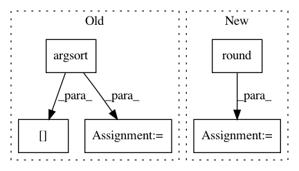

a434c63df31f3b7d25f77da7c64e32f86d5230dd,umap/umap_.py,,fuzzy_simplicial_set,#Any#Any#Any#Any#Any#Any#Any#,574
Before Change
"different parameters.")
for i in range(knn_indices.shape[0]):
order = np.argsort(knn_dists[i])
knn_dists[i] = knn_dists[i][order]
knn_indices[i] = knn_indices[i][order]
sigmas, rhos = smooth_knn_dist(knn_dists, n_neighbors)
for i in range(knn_indices.shape[0]):
After Change
tuple(metric_kwds.values()))
// TODO: Hacked values for now
n_trees = 5 + int(round((X.shape[0]) ** 0.5 / 20.0))
n_iters = max(5, int(round(np.log2(X.shape[0]))))
leaf_array = rptree_leaf_array(X, n_neighbors,
rng_state, n_trees=n_trees,
angular=angular)
In pattern: SUPERPATTERN
Frequency: 3
Non-data size: 5
Instances
Project Name: lmcinnes/umap
Commit Name: a434c63df31f3b7d25f77da7c64e32f86d5230dd
Time: 2017-12-08
Author: leland.mcinnes@gmail.com
File Name: umap/umap_.py
Class Name:
Method Name: fuzzy_simplicial_set
Project Name: WheatonCS/Lexos
Commit Name: ce5da48b8586d7cfdb392b8cad1988e6bfdd17d5
Time: 2017-08-03
Author: liu_xinru@wheatoncollege.edu
File Name: lexos/processors/analyze/similarity.py
Class Name:
Method Name: similarity_maker
Project Name: WheatonCS/Lexos
Commit Name: 70fcd3094baba3139afcda727683d58c2928261f
Time: 2017-08-04
Author: liu_xinru@wheatoncollege.edu
File Name: lexos/processors/analyze/similarity.py
Class Name:
Method Name: similarity_maker